AUTOMATIC TRANSMISSION UNIT > REASSEMBLY |
| 1. BEARING POSITION |
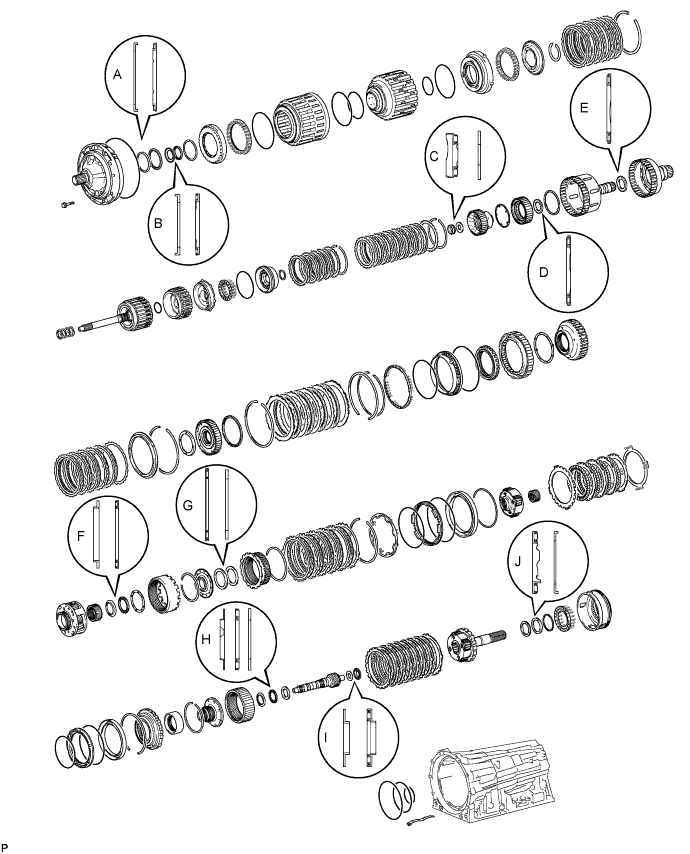
| Mark | Front Race Diameter Inside / Outside | Thrust Bearing Diameter Inside / Outside | Rear Race Diameter Inside / Outside |
| A | 74.26 to 74.56 mm (2.92 to 2.94 in.) / 87.39 to 87.74 mm (3.44 to 3.45 in.) | 71.96 to 72.26 mm (2.83 to 2.84 in.) / 85.25 to 85.6 mm (3.36 to 3.37 in.) | - |
| B | 38.0 to 38.3 mm (1.50 to 1.51 in.) / 53.9 to 54.1 mm (2.12 to 2.13 in.) | 36.45 to 36.7 mm (1.44 to 1.45 in.) / 52.96 to 53.26 mm (2.09 to 2.10 in.) | - |
| C | - | 21.05 to 21.3 mm (0.829 to 0.839 in.) / 39.63 to 39.88 mm (1.56 to 1.57 in.) | 22.8 to 23.1 mm (0.898 to 0.909 in.) / 44.5 to 44.75 mm (1.75 to 1.76 in.) |
| D | - | 39.45 to 39.7 mm (1.55 to 1.56 in.) / 60.5 to 60.75 mm (2.38 to 2.39 in.) | - |
| E | - | 46.45 to 46.7 mm (1.83 to 1.84 in.) / 64.3 to 64.55 mm (2.53 to 2.54 in.) | - |
| F | 55.0 to 55.2 mm (2.165 to 2.173 in.) / 68.8 to 69.3 mm (2.71 to 2.73 in.) | 54.55 to 54.8 mm (2.15 to 2.16 in.) / 70.0 to 70.5 mm (2.76 to 2.78 in.) | - |
| G | - | 65.35 to 65.6 mm (2.57 to 2.58 in.) / 85.6 to 85.95 mm (3.37 to 3.38 in.) | 62.85 to 63.1 mm (2.47 to 2.48 in.) / 82.3 to 82.6 mm (3.24 to 3.25 in.) |
| H | 39.67 to 39.87 mm (1.56 to 1.57 in.) / 56.5 to 57.0 mm (2.22 to 2.24 in.) | 36.5 to 36.6 mm (1.437 to 1.441 in.) / 56.62 to 56.92 mm (2.23 to 2.24 in.) | 36.45 to 36.7 mm (1.435 to 1.445 in.) / 56.5 to 57.0 mm (2.22 to 2.24 in.) |
| I | 21.05 to 21.3 mm (0.829 to 0.839 in.) / 39.5 to 39.8 mm (1.56 to 1.57 in.) | 23.2 to 23.4 mm (0.913 to 0.921 in.) / 43.9 to 44.15 mm (1.73 to 1.74 in.) | - |
| J | - | 43.6 to 43.9 mm (1.72 to 1.73 in.) / 62.3 to 62.8 mm (2.45 to 2.47 in.) | 47.15 to 47.4 mm (1.86 to 1.87 in.) / 66.9 to 67.1 mm (2.63 to 2.64 in.) |
| 2. INSTALL 1ST AND REVERSE BRAKE PISTON |
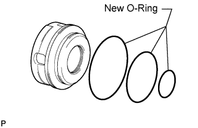 |
Coat 3 new O-rings with ATF, and install them to the 1st and reverse brake piston.
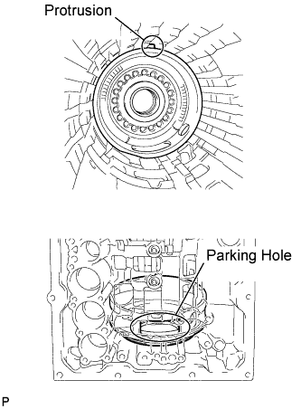 |
Install the 1st and reverse brake piston to the transmission case.
| 3. INSTALL 1ST AND REVERSE BRAKE RETURN SPRING SUB-ASSEMBLY |
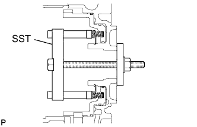 |
Place the brake return spring onto the 1st and reverse brake piston.
Place SST on the spring retainer, and compress the return spring.
Using SST, install the snap ring.
| 4. SELECT NO. 4 BRAKE FLANGE |
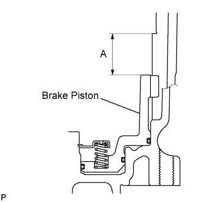 |
Measure distance A (from the tip of the 1st and reverse brake piston to the step in the transmission case) in the illustration.*1
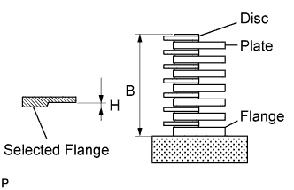 |
Assemble the No. 4 brake flange, 7 No. 4 brake discs and 6 No. 4 brake plates, and measure distance B in the illustration.*2
Apply the A and B measurements taken in *1 and *2 to the graph below. Use A for the X axis and B for the Y axis, and then choose the No. 4 brake selected flange indicated by the graph point.
Measure length H of the selected flange as shown in the illustration.
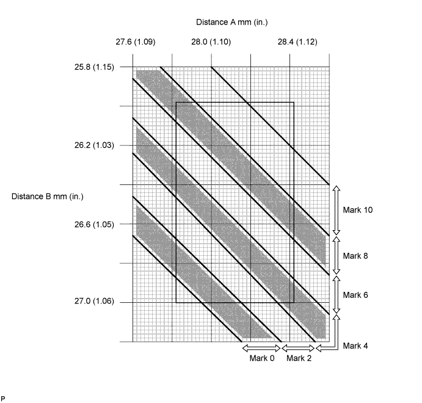
| Mark | Thickness |
| 0 | 0 mm (0 in.) |
| 2 | 0.15 to 0.25 mm (0.00590 to 0.00984 in.) |
| 4 | 0.35 to 0.45 mm (0.0138 to 0.0177 in.) |
| 6 | 0.55 to 0.65 mm (0.0217 to 0.0256 in.) |
| 8 | 0.75 to 0.85 mm (0.0295 to 0.0335 in.) |
| 10 | 0.95 to 1.05 mm (0.0374 to 0.0413 in.) |
| 5. INSTALL REAR PLANETARY GEAR ASSEMBLY |
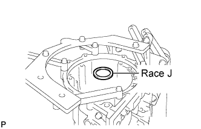 |
Install the thrust bearing race.
| Item | Inside | Outside |
| Race J | 47.15 to 47.4 mm (1.86 to 1.87 in.) | 66.9 to 67.1 mm (2.63 to 2.64 in.) |
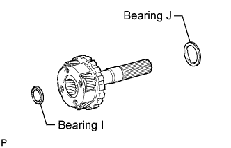 |
Install the 2 thrust needle roller bearings to the rear planetary gear.
| Item | Inside | Outside |
| Bearing I | 23.2 to 23.4 mm (0.913 to 0.921 in.) | 43.9 to 44.15 mm (1.73 to 1.74 in.) |
| Bearing J | 43.6 to 43.9 mm (1.72 to 1.73 in.) | 62.3 to 62.8 mm (2.45 to 2.47 in.) |
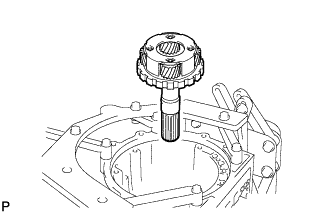 |
Install the rear planetary gear assembly.
| 6. INSTALL BRAKE PLATE STOPPER SPRING |
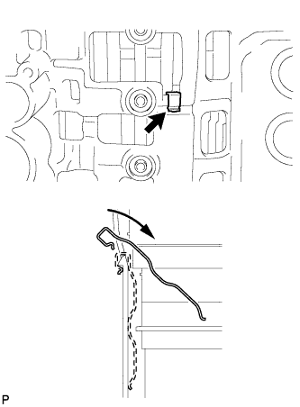 |
| 7. INSTALL REAR PLANETARY RING GEAR |
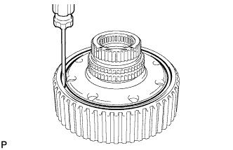 |
Install the rear planetary ring gear flange to the rear planetary ring gear.
Using a screwdriver, install the snap ring.
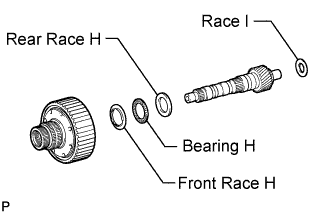 |
Install the 3 thrust bearing races, thrust needle roller bearing and planetary ring gear with the rear planetary ring gear flange to the intermediate shaft.
| Item | Inside | Outside |
| Front race H | 39.67 to 39.87 mm (1.56 to 1.57 in.) | 56.5 to 57.0 mm (2.22 to 2.24 in.) |
| Bearing H | 36.5 to 36.6 mm (1.437 to 1.441 in.) | 56.62 to 56.92 mm (2.23 to 2.24 in.) |
| Rear race H | 36.45 to 36.7 mm (1.435 to 1.445 in.) | 56.5 to 57.0 mm (2.22 to 2.24 in.) |
| Race I | 21.05 to 21.3 mm (0.829 to 0.839 in.) | 39.5 to 39.8 mm (1.56 to 1.57 in.) |
| 8. INSTALL INTERMEDIATE SHAFT WITH REAR PLANETARY RING GEAR FLANGE AND REAR PLANETARY RING GEAR |
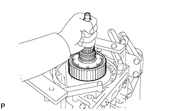 |
Install the intermediate shaft with the rear planetary ring gear flange and rear planetary ring gear to the transmission case.
| 9. INSTALL NO. 4 BRAKE DISC |
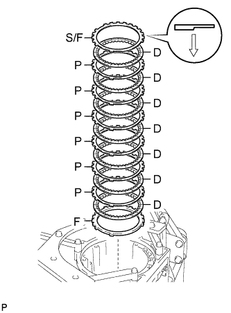 |
Install the flange, 7 discs, 6 plates and selected flange.
| 10. INSTALL NO. 3 1-WAY CLUTCH INNER RACE |
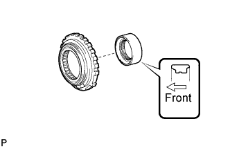 |
Install the 1-way clutch inner race to the No. 3 1-way clutch assembly.
| 11. INSPECT NO. 3 1-WAY CLUTCH ASSEMBLY |
 |
Hold the rear planetary ring gear flange and turn the 1-way clutch. Check that the 1-way clutch turns freely counterclockwise and locks when turned clockwise.
| 12. INSTALL NO. 3 1-WAY CLUTCH ASSEMBLY |
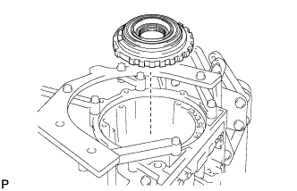 |
Install the 1-way clutch assembly to the transmission case.
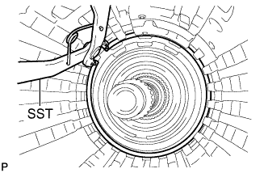 |
Using SST, install the snap ring.
| 13. INSTALL NO. 2 BRAKE PISTON |
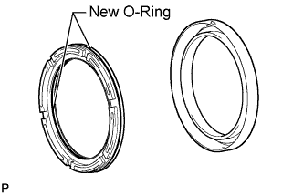 |
Coat 2 new O-rings with ATF, and install them to the brake piston.
Press the brake piston into the brake cylinder with both hands.
| 14. INSTALL NO. 2 BRAKE CYLINDER WITH NO. 2 BRAKE PISTON |
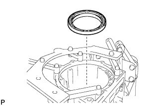 |
Install the No. 2 brake cylinder with piston to the transmission case.
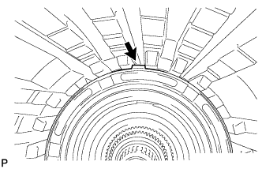
| 15. SELECT NO. 2 BRAKE FLANGE |
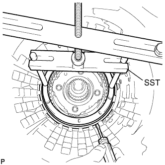 |
Install the No. 2 brake piston return spring and flange to the No. 2 brake piston.
Place SST on the brake flange and compress the brake return spring.
Using a screwdriver, install the snap ring to the transmission case.
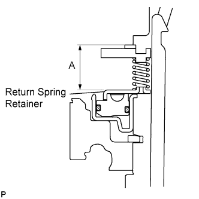 |
Measure distance A (from the top surface of the snap ring to the top surface of the brake piston return spring retainer) in the illustration.*1
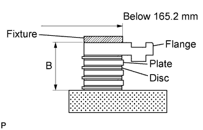 |
Assemble the 4 discs, 3 plates and flange as shown in the illustration. Then with a fixture of 165.2 mm (6.50 in.) or less placed on the flange, measure distance B.*2
Apply the A and B measurements taken in *1 and *2 to the graph below. Use A for the X axis and B for the Y axis, and then choose the flange indicated by the graph point.
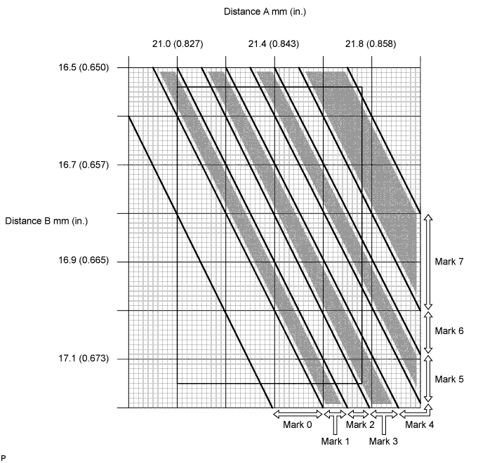
| Mark | Thickness |
| 0 | 1.95 to 2.05 mm (0.0768 to 0.0807 in.) |
| 1 | 2.05 to 2.15 mm (0.0807 to 0.0846 in.) |
| 2 | 2.15 to 2.25 mm (0.0846 to 0.0886 in.) |
| 3 | 2.25 to 2.35 mm (0.0886 to 0.0925 in.) |
| 4 | 2.35 to 2.45 mm (0.0925 to 0.0965 in.) |
| 5 | 2.45 to 2.55 mm (0.0965 to 0.100 in.) |
| 6 | 2.55 to 2.65 mm (0.100 to 0.104 in.) |
| 7 | 2.65 to 2.75 mm (0.104 to 0.108 in.) |
Remove the snap ring, flange and No. 2 brake piston return spring from the transmission case.
| 16. INSTALL NO. 2 BRAKE DISC SET |
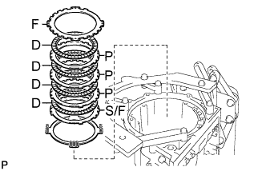 |
Install the brake piston return spring, selected flange, 4 discs, 3 plates, and flange.
Place SST on the brake flange and compress the brake return spring.
Using a screwdriver, install the snap ring to the transmission case.
| 17. INSTALL CENTER PLANETARY GEAR ASSEMBLY |
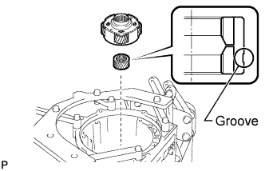 |
Install the center planetary sun gear and center planetary gear to the transmission case.
| 18. INSTALL NO. 1 BRAKE PISTON |
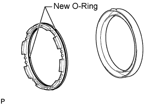 |
Coat 2 new O-rings with ATF, and install them to the brake piston.
Press the brake piston into the brake cylinder with both hands.
| 19. INSTALL NO. 1 BRAKE CYLINDER WITH NO. 1 BRAKE PISTON |
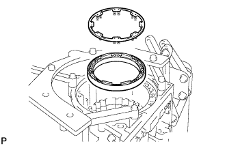 |
Install the No. 1 brake cylinder with piston and brake piston return spring to the transmission case.
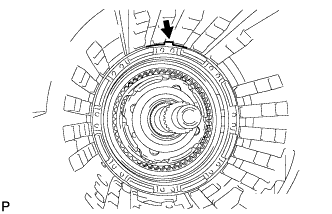
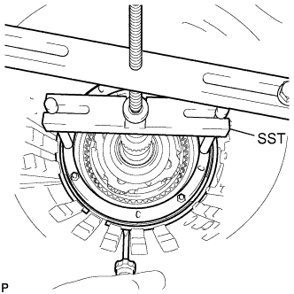 |
Place SST on the brake return spring and compress the brake return spring.
Using a screwdriver, install the snap ring to the transmission case.
| 20. SELECT NO. 1 BRAKE FLANGE |
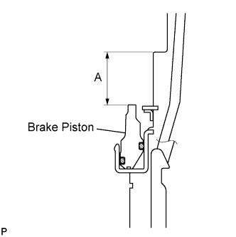 |
Measure distance A (from the step in the transmission case to the tip of the No. 1 brake piston) in the illustration.*1
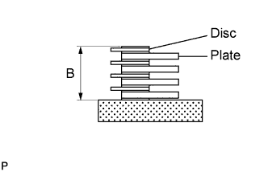 |
Assemble the 4 plates and 4 discs and measure distance B in the illustration.*2
Apply the A and B measurements taken in *1 and *2 to the graph below. Use A for the X axis and B for the Y axis, and then choose the flange indicated by the graph point.
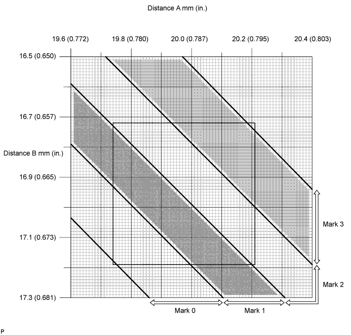
| Mark | Thickness |
| 0 | 1.95 to 2.05 mm (0.0768 to 0.0807 in.) |
| 1 | 2.15 to 2.25 mm (0.0846 to 0.0886 in.) |
| 2 | 2.35 to 2.45 mm (0.0925 to 0.0965 in.) |
| 3 | 2.55 to 2.65 mm (0.100 to 0.104 in.) |
| 21. INSTALL CENTER PLANETARY RING GEAR |
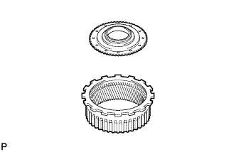 |
Install the front planetary ring gear flange to the center planetary ring gear.
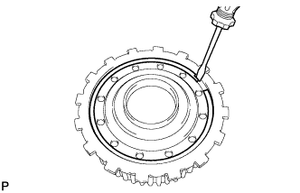 |
Using a screwdriver, install the snap ring.
| 22. INSTALL FRONT PLANETARY RING GEAR |
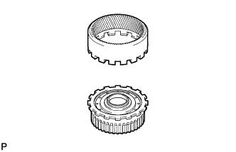 |
Install the front planetary ring gear to the center planetary ring gear.
| 23. INSTALL FRONT PLANETARY RING GEAR WITH FRONT PLANETARY RING GEAR FLANGE SUB-ASSEMBLY AND CENTER PLANETARY RING GEAR |
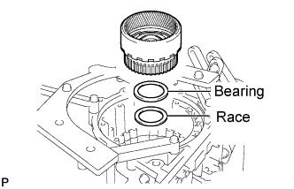 |
Install the thrust bearing race and thrust needle roller bearing.
| Item | Inside | Outside |
| Race | 62.85 to 63.1 mm (2.47 to 2.48 in.) | 82.3 to 82.6 mm (3.24 to 3.25 in.) |
| Bearing | 65.35 to 65.6 mm (2.57 to 2.58 in.) | 85.6 to 85.95 mm (3.37 to 3.38 in.) |
Install the front planetary ring gear with the front planetary ring gear flange and center planetary ring gear to the transmission case.
| 24. INSTALL FRONT PLANETARY GEAR ASSEMBLY |
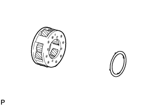 |
Install the No. 2 planetary carrier thrust washer to the front planetary gear.
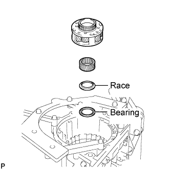 |
Install the thrust needle roller bearing, thrust bearing race, front planetary sun gear and front planetary gear.
| Item | Inside | Outside |
| Bearing | 54.55 to 54.8 mm (2.15 to 2.16 in.) | 70.0 to 70.5 mm (2.76 to 2.78 in.) |
| Race | 55.0 to 55.2 mm (2.165 to 2.173 in.) | 68.8 to 69.3 mm (2.71 to 2.73 in.) |
| 25. INSTALL 1-WAY CLUTCH INNER RACE SUB-ASSEMBLY |
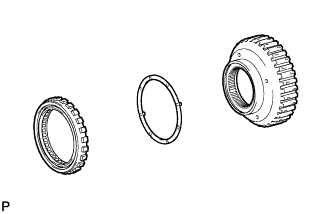 |
Apply the No. 1 planetary carrier thrust washer to the 1-way clutch inner race, and then install them to the 1-way clutch.
| 26. INSPECT 1-WAY CLUTCH ASSEMBLY |
 |
Install the 1-way clutch to the 1-way clutch inner race.
Hold the 1-way clutch inner race and turn the 1-way clutch. Check that the 1-way clutch turns freely counterclockwise and locks when turned clockwise.
Remove the 1-way clutch from the 1-way clutch inner race.
| 27. INSTALL 1-WAY CLUTCH ASSEMBLY WITH 1-WAY CLUTCH INNER RACE SUB-ASSEMBLY |
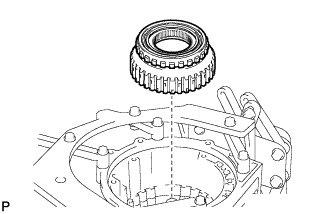 |
Install the 1-way clutch with the 1-way clutch inner race to the transmission case.
| 28. INSTALL NO. 1 BRAKE DISC SET |
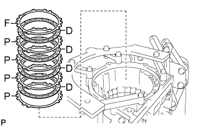 |
Install the 4 plates, 4 discs and flange.
| 29. INSTALL NO. 3 BRAKE PISTON |
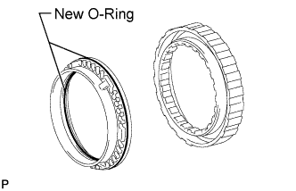 |
Coat 2 new O-rings with ATF, and install them to the brake piston.
Press the brake piston into the brake cylinder with both hands.
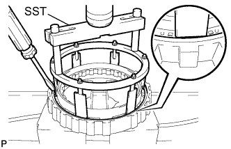 |
Using SST and a press, compress the return spring and install the snap ring with a screwdriver.
| 30. INSTALL NO. 3 BRAKE CYLINDER WITH NO. 3 BRAKE PISTON AND NO. 3 BRAKE PISTON RETURN SPRING SUB-ASSEMBLY |
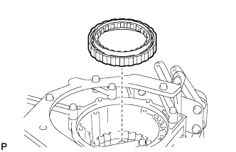 |
Install the No. 3 brake cylinder with the No. 3 brake piston and No. 3 brake piston return spring to the transmission case.
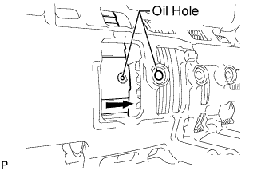 |
| 31. INSTALL NO. 3 BRAKE PISTON HOLE SNAP RING |
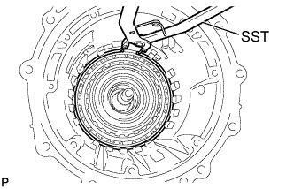 |
Using SST, install the snap ring.
| 32. INSTALL NO. 3 BRAKE DISC SET |
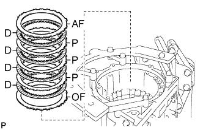 |
Install the ''O'' mark flange, 4 discs, 3 plates and ''A'' mark flange to the transmission case.
| 33. INSTALL NO. 3 BRAKE SNAP RING |
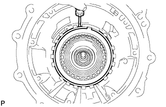 |
Using a screwdriver, install the snap ring.
| 34. INSTALL DIRECT CLUTCH PISTON SUB-ASSEMBLY |
Coat 2 new O-rings with ATF, and install them to the direct clutch piston.
Install the direct clutch return spring and No. 2 clutch balancer to the direct clutch piston.
Press the direct clutch piston with the clutch return spring and clutch balancer into the reverse clutch piston with both hands.
Place SST on the direct clutch balancer, and compress the return spring with a press.
Using SST, install the snap ring.
 |
Set the end gap of the snap ring in the balancer as shown in the illustration.
| 35. INSTALL REVERSE CLUTCH PISTON SUB-ASSEMBLY |
Coat a new O-ring with ATF, and install it to the clutch drum.
Coat a new O-ring with ATF, and install it to the reverse clutch piston.
Pass the clutch drum into the reverse clutch piston with both hands.
| 36. INSTALL NO. 3 CLUTCH BALANCER |
Coat a new O-ring with ATF, and install it to the reverse clutch piston.
Install the reverse clutch return spring and balancer onto the reverse clutch piston.
Place SST on the clutch balancer, and compress the clutch balancer with a press.
Using SST, install the snap ring.
Set the end gap of the snap ring in the piston as shown in the illustration.
| 37. INSTALL DIRECT CLUTCH DISC |
Place the oil pump onto the torque converter clutch, and then place the clutch drum onto the oil pump.
Install the 6 plates, 6 discs and reverse clutch flange to the clutch drum.
Using a screwdriver, install the snap ring to the clutch drum.
Using a dial indicator, measure the moving distance (A) of the clutch flange at both ends across the diameter while blowing compressed air (392 kPa, 2.0 kgf/cm2, 57 psi) into the oil hole as shown in the illustration. Then choose from the 10 flange thicknesses in the table so that the measured value is within the standard value.
| Mark | Thickness |
| 0 | 3.45 to 3.55 mm (0.136 to 0.140 in.) |
| 1 | 3.55 to 3.65 mm (0.140 to 0.144 in.) |
| 2 | 3.65 to 3.75 mm (0.144 to 0.148 in.) |
| 3 | 3.75 to 3.85 mm (0.148 to 0.152 in.) |
| 4 | 3.85 to 3.95 mm (0.152 to 0.156 in.) |
| 5 | 3.95 to 4.05 mm (0.156 to 0.159 in.) |
| 6 | 4.05 to 4.15 mm (0.159 to 0.163 in.) |
| 7 | 4.15 to 4.25 mm (0.163 to 0.167 in.) |
| 8 | 4.25 to 4.35 mm (0.167 to 0.171 in.) |
| A | 4.35 to 4.45 mm (0.171 to 0.175 in.) |
Temporarily remove the snap ring, install the selected flange and reinstall the snap ring.
| 38. SELECT REVERSE CLUTCH FLANGE |
Using a screwdriver, install the snap ring to the clutch drum.
Install the flange, 4 discs, 3 plates, selected flange, cushion plate and reverse clutch reaction sleeve to the clutch drum.
Using a screwdriver, install the hole snap ring.
Using a dial indicator, measure the moving distance (A minus B) of the tip of the reverse clutch piston (A) and cushion plate at both ends across the diameter (B) while blowing compressed air (392 kPa, 2.0 kgf/cm2, 57 psi) into the oil hole as shown in the illustration. Then choose from the 12 flange thicknesses in the table so that the measured value is within the standard value.
| Mark | Thickness |
| 0 | 2.35 to 2.45 mm (0.0925 to 0.0965 in.) |
| 1 | 2.45 to 2.55 mm (0.0965 to 0.100 in.) |
| 2 | 2.55 to 2.65 mm (0.100 to 0.104 in.) |
| 3 | 2.65 to 2.75 mm (0.104 to 0.108 in.) |
| 4 | 2.75 to 2.85 mm (0.108 to 0.112 in.) |
| 5 | 2.85 to 2.95 mm (0.112 to 0.116 in.) |
| 6 | 2.95 to 3.05 mm (0.116 to 0.120 in.) |
| 7 | 3.05 to 3.15 mm (0.120 to 0.124 in.) |
| 8 | 3.15 to 3.25 mm (0.124 to 0.128 in.) |
| A | 3.25 to 3.35 mm (0.128 to 0.132 in.) |
| B | 3.35 to 3.45 mm (0.132 to 0.136 in.) |
| C | 3.45 to 3.55 mm (0.136 to 0.140 in.) |
 |
Remove the snap ring, reverse clutch reaction sleeve and rear clutch disc set from the clutch drum.
| 39. INSTALL FORWARD CLUTCH PISTON SUB-ASSEMBLY AND COAST CLUTCH PISTON |
Coat a new O-ring with ATF, and install it to the input shaft.
Install the forward clutch piston and coast clutch piston to the input shaft.
Coat a new O-ring with ATF, and install it to the No. 1 clutch balancer.
Install the forward clutch return spring and No. 1 clutch balancer to the input shaft.
Place SST on the No. 1 clutch balancer, and compress the return spring with a press.
Using SST, install the snap ring.
Set the end gap of the snap ring in the balancer as shown in the illustration.
| 40. INSTALL COAST CLUTCH DISC SET |
Install the 5 plates, 5 discs and flange.
Temporarily install the snap ring.
Using a dial indicator, measure the moving distance (A) of the clutch flange at both ends across the diameter while blowing compressed air (196 kPa, 2.0 kgf/cm2, 28 psi) into the oil hole as shown in the illustration. Then choose from the 11 flange thicknesses in the table so that the measured value is within the standard value.
| Mark | Thickness |
| 0 | 2.95 to 3.05 mm (0.116 to 0.120 in.) |
| 1 | 3.05 to 3.15 mm (0.120 to 0.124 in.) |
| 2 | 3.15 to 3.25 mm (0.124 to 0.128 in.) |
| 3 | 3.25 to 3.35 mm (0.128 to 0.132 in.) |
| 4 | 3.35 to 3.45 mm (0.132 to 0.136 in.) |
| 5 | 3.45 to 3.55 mm (0.136 to 0.140 in.) |
| 6 | 3.55 to 3.65 mm (0.140 to 0.144 in.) |
| 7 | 3.65 to 3.75 mm (0.144 to 0.148 in.) |
| 8 | 3.75 to 3.85 mm (0.148 to 0.152 in.) |
| A | 3.85 to 3.95 mm (0.152 to 0.156 in.) |
| B | 3.95 to 4.05 mm (0.156 to 0.159 in.) |
Temporarily remove the snap ring, install the selected flange and reinstall the snap ring.
| 41. INSTALL NO. 4 1-WAY CLUTCH ASSEMBLY |
Install the No. 1 clutch hub thrust washer to the coast clutch hub.
Install the 1-way clutch to the coast clutch hub.
| 42. INSPECT NO. 4 1-WAY CLUTCH ASSEMBLY |
 |
Hold the coast clutch hub and turn the 1-way clutch assembly. Check that the 1-way clutch turns freely clockwise and locks when turned counterclockwise.
| 43. INSTALL COAST CLUTCH HUB SUB-ASSEMBLY WITH NO. 4 1-WAY CLUTCH ASSEMBLY |
Install the 2 thrust needle roller bearings, thrust bearing race and coast clutch hub with the No. 4 1-way clutch to the input shaft.
| Item | Inside | Outside |
| Bearing C | 21.05 to 21.3 mm (0.829 to 0.839 in.) | 39.63 to 39.88 mm (1.56 to 1.57 in.) |
| Race | 22.8 to 23.1 mm (0.898 to 0.909 in.) | 44.5 to 44.75 mm (1.75 to 1.76 in.) |
| Bearing D | 39.45 to 39.7 mm (1.55 to 1.56 in.) | 60.5 to 60.75 mm (2.38 to 2.39 in.) |
| 44. INSTALL FORWARD MULTIPLE DISC CLUTCH DISC SET |
Install the cushion, 6 plates, 6 discs and flange to the input shaft.
 |
Temporarily install the snap ring.
Using a dial indicator, measure the moving distance (A) of the clutch flange at both ends across the diameter while blowing compressed air (196 kPa, 2.0 kgf/cm2, 28 psi) into the oil hole as shown in the illustration. Then choose from the 12 flange thicknesses in the table so that the measured value is within the standard value.
| Mark | Thickness |
| 0 | 2.95 to 3.05 mm (0.116 to 0.120 in.) |
| 1 | 3.05 to 3.15 mm (0.120 to 0.124 in.) |
| 2 | 3.15 to 3.25 mm (0.124 to 0.128 in.) |
| 3 | 3.25 to 3.35 mm (0.128 to 0.132 in.) |
| 4 | 3.35 to 3.45 mm (0.132 to 0.136 in.) |
| 5 | 3.45 to 3.55 mm (0.136 to 0.140 in.) |
| 6 | 3.55 to 3.65 mm (0.140 to 0.144 in.) |
| 7 | 3.65 to 3.75 mm (0.144 to 0.148 in.) |
| 8 | 3.75 to 3.85 mm (0.148 to 0.152 in.) |
| A | 3.85 to 3.95 mm (0.152 to 0.156 in.) |
| B | 3.95 to 4.05 mm (0.156 to 0.159 in.) |
| C | 4.05 to 4.15 mm (0.159 to 0.163 in.) |
Temporarily remove the snap ring, install the selected flange and reinstall the snap ring.
| 45. INSTALL INPUT SHAFT OIL SEAL RING |
Overlap the seal ring edges in the axial direction.
Coat 4 new oil seal rings with ATF.
Squeeze the ends of the 4 oil seal rings together, and then install them to the input shaft groove.
| 46. INSTALL INPUT SHAFT ASSEMBLY |
Install the input shaft to the clutch drum.
| 47. INSTALL FORWARD CLUTCH HUB SUB-ASSEMBLY |
Install the No. 3 clutch hub thrust washer, forward clutch hub and thrust needle roller bearing to the clutch drum.
| Item | Inside | Outside |
| Bearing | 46.45 to 46.7 mm (1.83 to 1.84 in.) | 64.3 to 64.55 mm (2.53 to 2.54 in.) |
| 48. INSTALL REVERSE CLUTCH HUB SUB-ASSEMBLY |
Install the reverse clutch hub to the clutch drum.
| 49. INSTALL REAR CLUTCH DISC SET |
Install the flange, 4 discs, 3 plates, selected flange and reverse clutch reaction sleeve to the clutch drum.
Using a screwdriver, install the snap ring to the clutch drum.
| 50. INSTALL NO. 2 1-WAY CLUTCH ASSEMBLY |
Install the clutch drum thrust washer to the clutch drum.
Install the 1-way clutch to the clutch drum.
| 51. INSPECT NO. 2 1-WAY CLUTCH ASSEMBLY |
 |
Hold the reverse clutch hub and turn the 1-way clutch assembly. Check that the 1-way clutch turns freely clockwise and locks when turned counterclockwise.
| 52. INSTALL CLUTCH DRUM AND INPUT SHAFT ASSEMBLY |
Install the 2 thrust needle roller bearings.
| Item | Inside | Outside |
| Bearing A | 71.96 to 72.26 mm (2.83 to 2.84 in.) | 85.25 to 85.6 mm (3.36 to 3.37 in.) |
| Bearing B | 36.45 to 36.7 mm (1.44 to 1.45 in.) | 52.96 to 53.26 mm (2.09 to 2.10 in.) |
Coat the clutch drum thrust washer with petroleum jelly and install it onto the clutch drum and input shaft assembly.
Install the clutch drum and input shaft assembly to the transmission case.
| 53. INSTALL OIL PUMP ASSEMBLY |
Coat a new O-ring with ATF, and install it to the oil pump.
Install the 2 thrust bearing races to the front oil pump.
| Item | Inside | Outside |
| Race A | 74.26 to 74.56 mm (2.92 to 2.94 in.) | 87.39 to 87.74 mm (3.44 to 3.45 in.) |
| Race B | 38.0 to 38.3 mm (1.50 to 1.51 in.) | 53.9 to 54.1 mm (2.12 to 2.13 in.) |
Pass the input shaft through the center hole of the oil pump, and align the bolt holes of the oil pump assembly with the transmission case.
Hold the input shaft, and lightly press the oil pump body to slide the oil seal rings into the overdrive direct clutch drum.
Apply seal packing to the flanges of the bolts.
Install the 10 bolts.
| 54. INSPECT INDIVIDUAL PISTON OPERATION |
 |
Check the operating sound while applying compressed air into the oil holes indicated in the illustration.
| 55. INSTALL MANUAL VALVE LEVER SHAFT OIL SEAL |
Using SST, tap in 2 new oil seals.
Coat the lips of the oil seals with MP grease.
| 56. INSTALL MANUAL VALVE LEVER SUB-ASSEMBLY |
Install a new spacer to the manual valve lever.
Push the manual valve lever shaft through the transmission case, and install the manual valve lever to the shaft.
Using a hammer, tap in a new spring pin.
Align the manual valve lever indentation with the spacer hole, and stake them together with the punch.
Check that the shaft rotates smoothly.
| 57. INSTALL PARKING LOCK PAWL |
Install a new E-ring to the shaft.
Install the parking lock pawl, shaft and spring.
| 58. INSTALL PARKING LOCK ROD SUB-ASSEMBLY |
Connect the parking lock rod to the manual valve lever.
| 59. INSTALL PARKING LOCK PAWL BRACKET |
Place the parking lock pawl bracket onto the transmission case and install the 3 bolts.
Move the manual valve lever to the P position, and confirm that the planetary ring gear is correctly locked by the lock pawl.
| 60. INSTALL B-1 ACCUMULATOR VALVE |
Install the 2 springs and accumulator valve to the hole.
| Spring | Free Length Outer Diameter | Color |
| B-1 Inner | 44.98 mm (1.77 in.) 11.30 mm (0.445 in.) | Natural |
| B-1 Outer | 46.36 mm (1.83 in.) 17.10 mm (0.673 in.) | Natural |
| 61. INSTALL C-3 ACCUMULATOR PISTON |
Coat 2 new O-rings with ATF, and install them to the piston.
Install the spring and accumulator piston to the hole.
| Spring | Free Length Outer Diameter | Color |
| C-3 | 76.65 mm (3.02 in.) 20.1 mm (0.791 in.) | White |
| 62. INSTALL B-3 ACCUMULATOR PISTON |
Coat 2 new O-rings with ATF, and install them to the piston.
Install the spring and accumulator piston to the hole.
| Spring | Free Length Outer Diameter | Color |
| B-3 | 64.50 mm (2.54 in.) 19.5 mm (0.768 in.) | Orange |
| 63. INSTALL C-2 ACCUMULATOR PISTON |
Coat 2 new O-rings with ATF, and install them to the piston.
Install the spring and accumulator piston to the hole.
| Spring | Free Length Outer Diameter | Color |
| C-2 | 68.0 mm (2.68 in.) 16.1 mm (0.634 in.) | Light green |
| 64. INSTALL CHECK BALL BODY |
Install the spring and check ball body.
| 65. INSTALL BRAKE DRUM GASKET |
Install 3 new brake drum gaskets.
| 66. INSTALL TRANSMISSION CASE GASKET |
Install 3 new transmission case gaskets.
| 67. INSTALL TRANSMISSION VALVE BODY ASSEMBLY |
Align the hole of the manual valve with the pin of the lever.
Install the 19 bolts.
Install the detent spring and detent spring cover with the bolt.
| 68. INSTALL TRANSMISSION WIRE |
Install 2 new O-rings to the transmission wires.
Install the transmission wire harnesses.
Install the bolts.
Connect the 9 connectors to the solenoid valves.
Connect the 2 ATF temperature sensors with the 2 clamps and 2 bolts.
| 69. INSTALL VALVE BODY OIL STRAINER ASSEMBLY |
 |
Coat a new O-ring with ATF, and install it to the oil strainer.
Install the oil strainer with the 4 bolts.
| 70. INSTALL AUTOMATIC TRANSMISSION OIL PAN SUB-ASSEMBLY |
Install the 4 magnets.
Install a new gasket to the oil pan.
Install the oil pan with the 12 bolts.
Install the drain plug.
| 71. INSTALL TRANSFER CASE ADAPTER RADIAL BALL BEARING |
 |
Using SST and a press, press in the bearing until it stops.
Using a screwdriver, install the snap ring.
| 72. INSTALL TRANSMISSION CASE ADAPTOR OIL SEAL |
Coat the lip of a new oil seal with ATF.
Using SST and a hammer, tap in the oil seal.
| 73. INSTALL REAR ADAPTOR TRANSFER |
Clean the threads of the bolts and case with non-residue solvent.
Apply seal packing to the rear adaptor transfer.
Install the rear adaptor transfer with the 10 bolts.
| 74. INSTALL AUTOMATIC TRANSMISSION HOUSING |
Clean the threads of the bolts and case with non-residue solvent.
Install the transmission housing with the 14 bolts.
| 75. INSTALL AUTOMATIC TRANSMISSION BREATHER TUBE |
Coat a new O-ring with ATF and install it to the breather tube.
Install the breather tube with the 2 bolts.
| 76. INSTALL OIL COOLER TUBE UNION |
 |
Coat 2 new O-rings with ATF, and install them to the 2 oil cooler tube unions.
Using a union nut wrench, install the 2 oil cooler tube unions.
| 77. INSTALL SPEED SENSOR |
Coat 2 new O-rings with ATF, and install them to the speed sensors.
Install the 2 speed sensors.
Install the 2 bolts.
| 78. INSTALL PARK/NEUTRAL POSITION SWITCH ASSEMBLY |
Install the park/neutral position switch to the manual valve lever shaft, and temporarily install the adjusting bolt.
Install a new lock washer and the nut.
Temporarily install the control shaft lever RH.
 |
Turn the control shaft lever RH counterclockwise until it stops, and then turn it clockwise 2 notches to set it to the N position.
Remove the control shaft lever RH.
 |
Align the groove with the neutral basic line.
Hold the switch in position and tighten the bolt.
 |
Using a screwdriver, bend the tabs of the lock washer.
| 79. INSTALL TRANSMISSION CONTROL SHAFT LEVER RH |
Install the control shaft lever RH with the washer and nut.